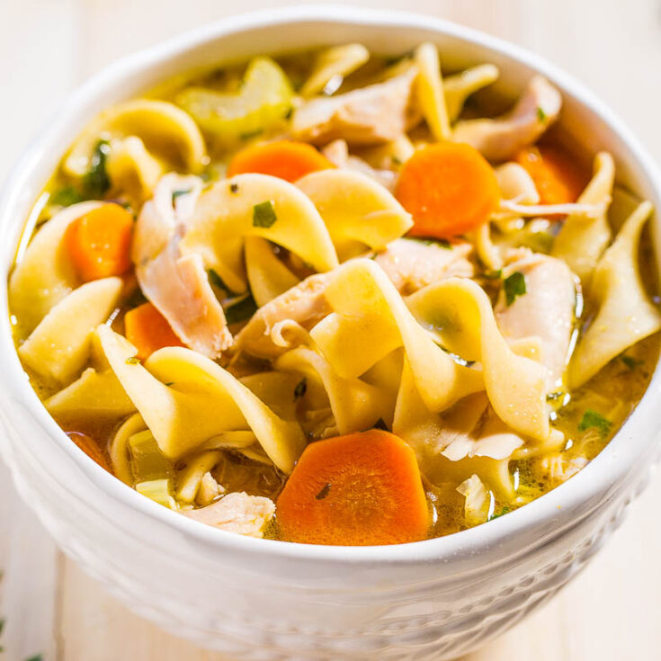

Odin Recipes - Chicken Noodle Soup
Chicken Noodle Soup

Description
Need something to get over a cold? Want something that will warm you up on a cold day? Look no further.
This Instant Pot soup is quick, easy, and delicious!
Ingredients
(These amounts are for 2 servings)
- 4 cups Chicken broth
- 8oz Egg noodle
- 2 Carrots - Diced
- 2 Stalks of celery - Diced
- 1 Onion - Minced
- 2 Cloves of garlic - Minced
- 2 Chicken breasts
- 2 Bay Leaves
- Dash Dried thyme
- 1 tsp Lemon juice
- Salt & pepper to taste
- Sweat mirepoix for ~5min
- Add garlic and cook until fragrant
- Add broth and deglaze pot
- Add chicken, bay leaves, thyme, salt, and pepper
- Set Instant Pot to "Soup" for 7min
- Natural pressure release
- Remove and shred chicken
- Bring mixture to a boil
- Add egg noodles and cook for 10min
- Add chicken and lemon juice
- Taste for seasoning and enjoy